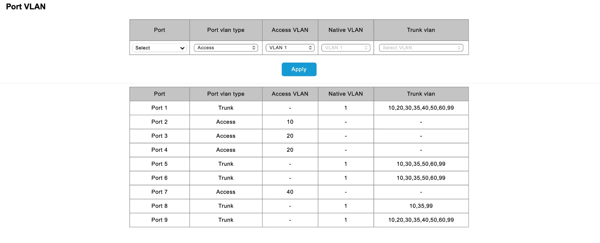

Organização lógica
A segmentação por VLANs permite separar equipamentos e serviços de acordo com a sua função, reduzindo a exposição desnecessária entre redes. O acesso entre segmentos é controlado pela firewall.

Afinal, o que é uma VLAN?
Uma VLAN (Virtual Local Area Network) é uma forma de criar várias redes lógicas independentes usando a mesma infraestrutura física. Em vez de comprares um switch para cada grupo de equipamentos, podes usar switches geríveis e atribuir portas — ou tráfego identificado — a VLANs diferentes.
No teu Home Lab, por exemplo, um computador na VLAN 10, o gateway Zigbee na VLAN 30 e o Proxmox na VLAN 40 podem estar ligados à mesma infraestrutura de switches, mas pertencem a redes diferentes. Para comunicarem entre VLANs, o tráfego passa por um equipamento de camada 3 — aqui, o pfSense — e pelas regras da firewall.
Porque não usar uma única rede para tudo?
Para limitar o tráfego de difusão, facilitar a gestão e reduzir a exposição de equipamentos que não precisam de comunicar diretamente. Um dispositivo IoT não necessita, por regra, de acesso livre à gestão do switch ou ao Proxmox.
Mapa da infraestrutura
O esquema apresentado resume a ligação entre a firewall, o switch principal, os acessos trunk e access, bem como alguns dos equipamentos mais relevantes do laboratório, incluindo NAS, ponto de acesso, Proxmox, Home Assistant e serviços auxiliares.
Na ligação principal, a firewall utiliza a porta física 0 para WAN1, a porta 1 para WAN2 e a porta 2 para LAN, ligada à porta 1 do switch principal. A porta 9 (SFP) estabelece o trunk para a porta 9 do segundo switch: aí, as portas 1 a 3 destinam-se à VLAN 30 (IoT), a porta 4 fica livre e as portas 5 a 8 pertencem à VLAN 40 (servidores e monitorização UPS).
Áreas de rede
Exemplo de separação funcional
- Rede de utilização diária: computadores e dispositivos de acesso.
- Rede de servidores: virtualização, serviços e aplicações.
- Rede de dispositivos IoT: sensores, gateways e automação.
- Rede de gestão: administração dos equipamentos.
- Rede de testes: máquinas virtuais e sistemas experimentais.
Configuração de portas e VLANs

Exemplo: porta access e porta trunk
Uma porta access transporta normalmente tráfego de uma única VLAN para um equipamento final. Uma porta trunk permite transportar várias VLANs identificadas por etiquetas 802.1Q entre equipamentos compatíveis.
Exemplo: regras entre VLANs
Uma prática útil é permitir apenas os serviços necessários entre segmentos, por exemplo acesso controlado ao Home Assistant, evitando acesso amplo e indiscriminado à rede de gestão.
Termos que aparecem nesta rede
Porta de switch atribuída normalmente a uma VLAN para ligar um dispositivo final.
Ligação capaz de transportar várias VLANs, normalmente com etiquetas IEEE 802.1Q.
Serviço que distribui automaticamente endereços IP e outros parâmetros de rede.
Equipamento ou endereço usado para alcançar outras redes, incluindo a internet.
Serviço que traduz nomes, como os de sites, para endereços IP.
Tradução de endereços de rede; permite, por exemplo, a vários equipamentos partilharem o acesso de saída à internet.